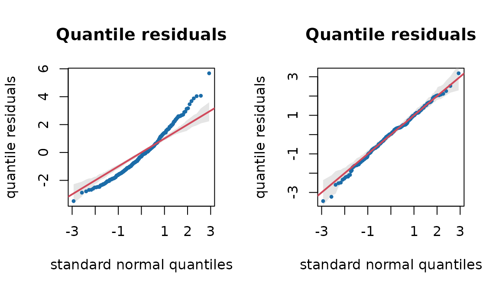
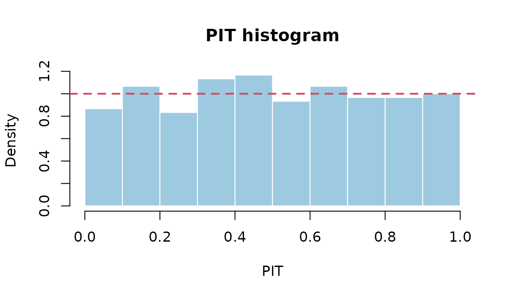
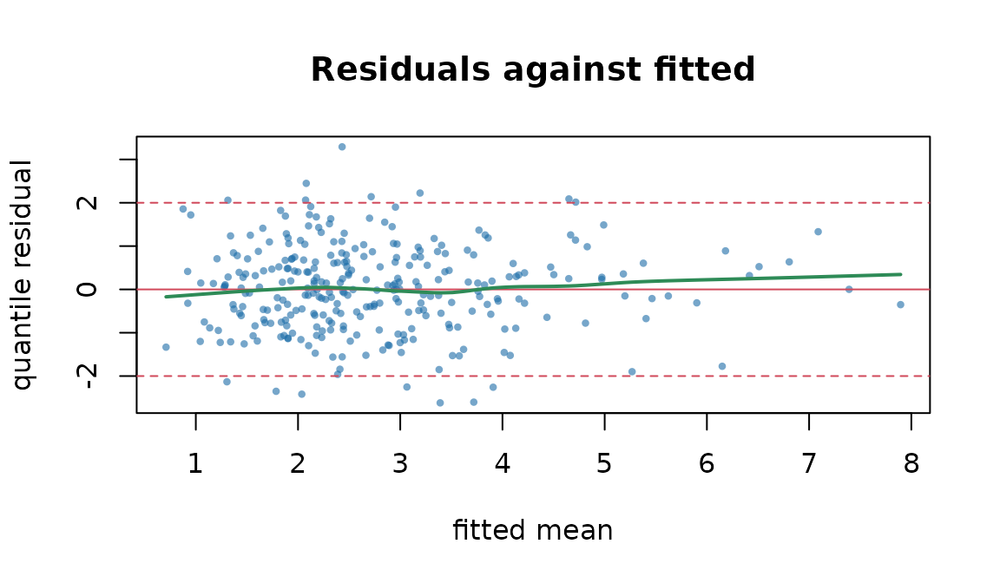
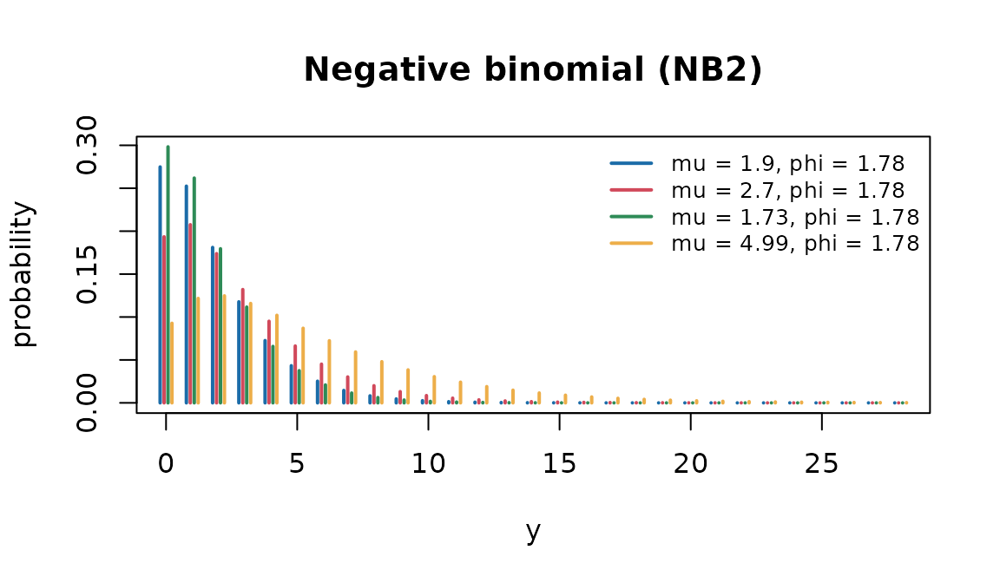
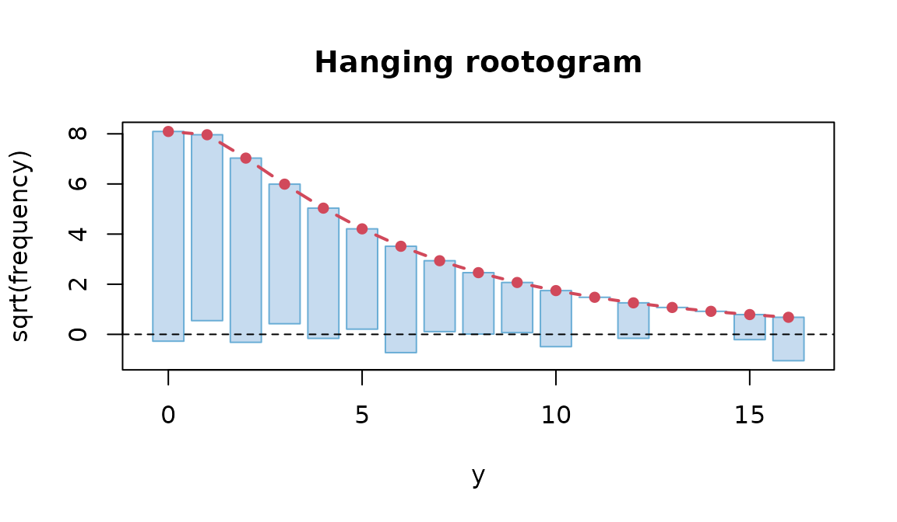

library(regcompR)
n <- 300
d <- data.frame(x = rnorm(n), g = factor(rep(1:30, each = 10)))
d$y <- rnbinom(n, mu = exp(1 + 0.5 * d$x), size = 2)
fp <- regcomp(y ~ x, family = "poisson", data = d)
fnb <- regcomp(y ~ x, family = "nb2", data = d)Residuals
Randomized quantile residuals (Dunn and Smyth 1996) are standard
normal under a correct model for discrete and continuous responses
alike. PIT values are uniform; for discrete laws and laws with point
masses they are randomized within the jump of the CDF.
residuals() also gives response and Pearson residuals.
head(cbind(quantile = residuals(fnb), pit = residuals(fnb, type = "pit"),
response = residuals(fnb, type = "response"), pearson = residuals(fnb, type = "pearson")))
#> quantile pit response pearson
#> 1 -0.57732203 0.3877221 -0.8974549 -0.4533010
#> 2 1.65680979 0.9513919 5.3003685 2.0336214
#> 3 -1.85657842 0.1451101 -1.7323318 -0.9370229
#> 4 1.38421884 0.9247055 7.0094671 1.6089541
#> 5 0.05618378 0.4245427 -0.8765856 -0.3195656
#> 6 0.29594672 0.6748465 0.2561994 0.1378976Diagnostic plots
plot() of a fit draws "qq" (with a
simulation envelope), "pit", "residuals"
against fitted values, "fitted" against observed,
"rootogram" for counts, "effects" of a
covariate on a parameter, "ranef" for random effects, and
for Bayesian fits "ppc" (posterior predictive check) and
"trace" (one line per chain).


plot(fnb, which = "residuals")
plot(fnb, which = "fitted")
plot(fnb, which = "rootogram")
plot(fnb, which = "effects", variable = "x")Scoring rules
scoring_rule() gives one score per observation (smaller
is better): the log score ("log"), the continuous ranked
probability score ("crps"), the Dawid-Sebastiani score
("dss"), and for categorical, ordinal, Bernoulli and
binomial responses the Brier ("brier") and ranked
probability ("rps") scores.
sapply(c("log", "crps", "dss"), function(r) c(poisson = mean(scoring_rule(fp, rule = r)),
nb2 = mean(scoring_rule(fnb, rule = r))))
#> log crps dss
#> poisson 2.34715 1.410868 3.417775
#> nb2 2.08841 1.351101 2.837920
db <- data.frame(x = rnorm(100)); db$y <- rbinom(100, 1, plogis(db$x))
mean(scoring_rule(regcomp(y ~ x, family = "bernoulli", data = db), rule = "brier"))
#> [1] 0.1854706re = "conditional" scores with the estimated group
effects and re = "zero" as for new groups. For Bayesian
fits every rule scores the posterior predictive distribution (the
mixture over posterior draws), not the law at the posterior mean. The
CRPS is infinite for a predictive law without a finite mean:
fpar <- regcomp(y ~ 1, xm = 1, family = "pareto", data = data.frame(y = exp(2:6)))
scoring_rule(fpar, data.frame(y = 1), rule = "crps")
#> [1] InfCross validation
cv_regcomp() refits on training folds and scores held
out rows. Folds split the analysis rows of the fit (rows dropped for
missing values stay out, and external weights and trial counts follow
their rows). group = holds out whole groups, predicted with
their random effects at zero; folds = gives an explicit
assignment.
cv <- cv_regcomp(fnb, K = 5, rule = "log")
c(estimate = cv$estimate, se = cv$se)
#> estimate se
#> 2.09403405 0.05254169
cvg <- cv_regcomp(fnb, rule = "crps", group = "g", K = 5)
cvg$estimate
#> [1] 1.364366
cvf <- cv_regcomp(fnb, folds = rep(1:3, length.out = n))
cvf$estimate
#> [1] 2.102685Comparing models
compare_models() gives log likelihood, AIC and BIC (and
optionally cross validated scores) for fits to the same observations of
the same response; it refuses fits to different rows, different response
transformations, or Bayesian fits.
compare_models(poisson = fp, nb2 = fnb, cv = "crps", K = 5)
#> model family logLik df AIC BIC cv_crps
#> 1 nb2 negative_binomial_nb2 -626.5230 3 1259.046 1270.157 1.357629
#> 2 poisson poisson -704.1451 2 1412.290 1419.698 1.418423
try(compare_models(fp, regcomp(log1p(y) ~ x, family = "normal", data = d)))
#> Error in compare_models(fp, regcomp(log1p(y) ~ x, family = "normal", data = d)) :
#> compare_models() needs fits to the same observations of the same response (same rows, same transformation).Identifiability, covariances and influence of the data
identifiability_check(fnb)
#> $condition_number
#> [1] 8.593194
#>
#> $weak_directions
#> list()
#>
#> $boundary_variances
#> NULL
#>
#> $notes
#> character(0)
sqrt(diag(vcov(fp)))
#> lambda:(Intercept) lambda:x
#> 0.03820117 0.03599492
sqrt(diag(vcov(fp, type = "sandwich")))
#> lambda:(Intercept) lambda:x
#> 0.05912529 0.05575825
sqrt(diag(vcov(fp, type = "sandwich", cluster = ~ g)))
#> lambda:(Intercept) lambda:x
#> 0.06868048 0.06863328Simulation based checks
simulate() draws replicated responses from the fitted
model and log_lik() returns pointwise log likelihoods (one
per observation, or a draws by observations matrix for Bayesian fits, as
needed for LOO).